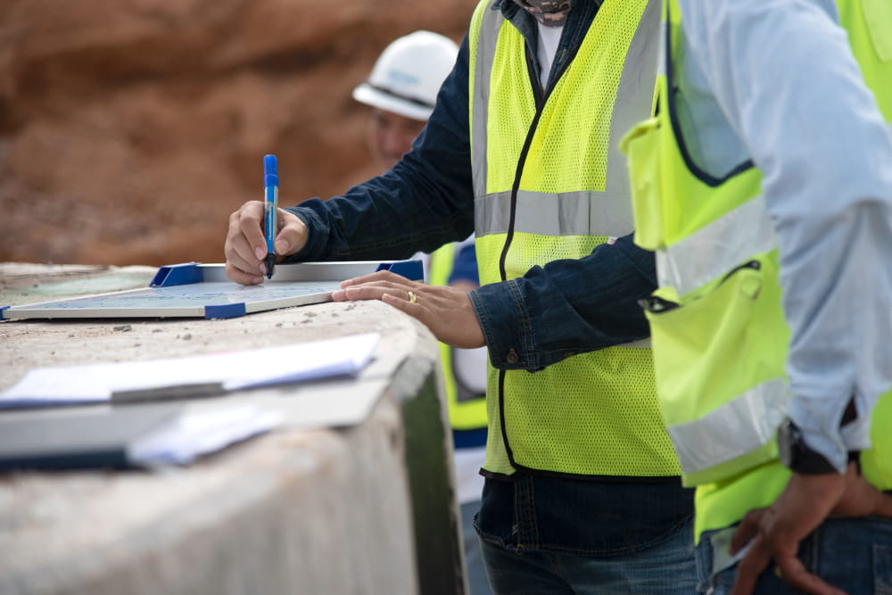

“Soluções confiáveis para a preservação do seu imóvel”
A inspeção de áreas comuns em condomínios detecta falhas construtivas, garantindo que os proprietários recebam o que foi prometido e evitando custos iniciais de manutenção, protegendo o síndico de responsabilidades legais.
A inspeção de recebimento de imóvel verifica problemas na construção usando análise técnica, visual e de documentos. Garante que
o proprietário receba o imóvel conforme comprou, seja na compra, aluguel ou após reformas..

A inspeção de entrega de obras identifica problemas construtivos após a construção ou reforma, permitindo correções pré-entrega.
Isso evita manutenções posteriores, protege a reputação da empresa e previne questões legais futuras com clientes.
Sobre
Luiz Abreu, Engenheiro Civil desde 2017, com ampla experiência em projetos,
execução e infraestrutura, incluindo assistência às garantias em uma das maiores
construtoras do Brasil. Minha atenção aos detalhes me permitiu entender as causas
de problemas como trincas e infiltrações. Através da Engenharia Diagnóstica,
ofereço consultoria que identifica problemas, suas causas, tratamentos e potenciais
consequências, evitando gastos ineficazes. Meu objetivo é fornecer soluções
confiáveis e orientar os clientes na preservação de suas propriedades.
Serviços Prestados
Detecção Vazamentos
A vistoria de detecção de vazamento visa identificar a origem
precisa do problema através de análises técnicas e testes. Isso possibilita abordar a causa da
infiltração de forma eficaz, evitando gastos desnecessários em soluções temporárias e garantindo
reparos permanentes.
Laudos de AVCB
O AVCB é um certificado obrigatório que atesta o cumprimento das normas anti-incêndio
em edifícios. Oferecemos serviços de laudo de AVCB para identificar e corrigir problemas,
vitando penalidades e garantindo segurança.
Vistoria Cautelar de Vizinhança
A vistoria cautelar de vizinhança visa prevenir conflitos entre
construtoras e vizinhos próximos à obra, documentando anomalias e condições dos imóveis vizinhos
antes da construção. Essencial na fase de planejamento, evita disputas futuras sobre danos nas
estruturas adjacentes. Beneficia todas as partes, agindo de forma preventiva e atendendo a requisitos
legais, como a norma de Vistoria de Vizinhança do Ibape - Nacional.
Inspeção de Entrega de Obras
A inspeção de entrega de obras busca identificar irregularidades
construtivas, incluindo falhas de execução e discrepâncias em relação a normas, projetos e descrições
contratuais. Realizada após a construção ou reforma, essa verificação ajuda a construtora/incorporado
ra a encontrar anomalias antes da entrega final, reduzindo necessidades de manutenção pós-obra. Além
disso, preserva a reputação da empresa e evita possíveis problemas legais ao evitar desgastes com
clientes ou processos futuros.
Inspeção de Recebimento de Imóveis
A inspeção de recebimento de imóvel, busca constatar vícios construtivos ou
inconformidades, a partir da análise técnica, visual e documental. Tudo isso a fim de garantir que o proprietário
obtenha o seu sonhado imóvel exatamente como adquiriu no momento da compra. Também conhecida como vistoria de entrega das chaves, esse
serviço pode ser realizado na compra ou aluguel, bem como após reforma do imóvel.